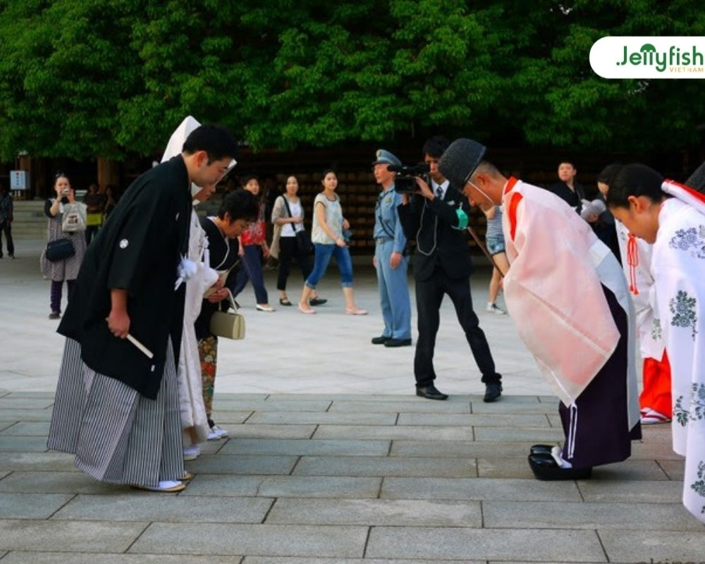
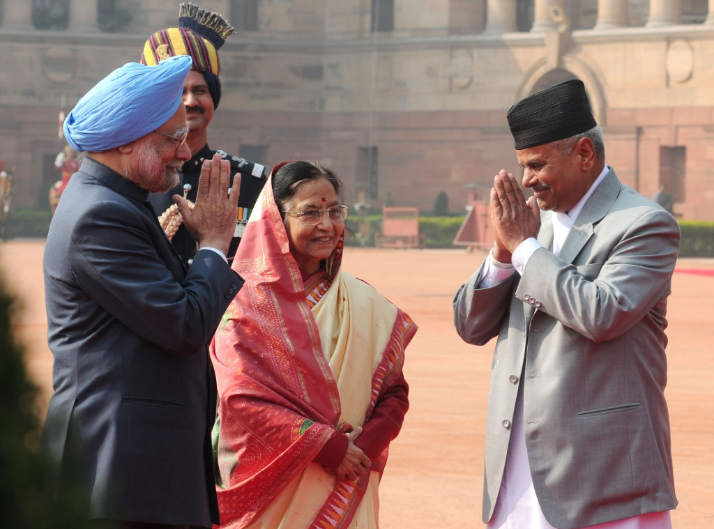

Nhật Bản: Cúi chào Ojigi
Hành động cúi chào thể hiện lòng tôn kính và sự khiêm nhường của người Nhật Bản.
- Eshaku (15°): Chào hỏi xã giao hàng ngày.
- Keirei (30°): Chào trong môi trường công sở, đối tác.
- Saikeirei (45°): Cúi chào sâu nhất để thể hiện lòng biết ơn hoặc tạ lỗi.
Ấn Độ: Namaste
Namaste mang ý nghĩa "Ánh sáng bên trong tôi cúi chào ánh sáng bên trong bạn".
- Cử chỉ: Chắp hai lòng bàn tay trước ngực và khẽ cúi đầu.
- Giá trị: Thể hiện sự tôn trọng, lòng thành kính và sự bình đẳng.
Pháp: La Bise

Nụ hôn má nhẹ nhàng thể hiện sự nồng hậu và tinh tế đặc trưng của người Pháp.
- Hành động: Chạm nhẹ má và tạo tiếng hôn (không thực sự hôn lên da).
- Quy luật: Thường hôn từ 2 đến 4 lần tùy thuộc vào vùng miền.
Thái Lan: Thái Wai

Wai là biểu tượng của sự hiền hòa, với đôi bàn tay chắp lại như đóa hoa sen đang nở.
- Độ cao tay: Tay đặt càng cao càng thể hiện sự kính trọng đối với người đối diện.
- Sử dụng: Dùng trong chào hỏi, cảm ơn, xin lỗi hoặc khi cầu nguyện.
New Zealand: Hongi
Hongi là nghi thức truyền thống của người Maori, chạm mũi và trán để chia sẻ "hơi thở cuộc sống".
- Hành động: Hai người áp nhẹ mũi và trán vào nhau đồng thời nhắm mắt.
- Ý nghĩa: Thể hiện sự gắn kết, vị khách trở thành một phần của vùng đất.
Bảng So Sánh Các Nghi Thức
| Quốc gia | Nghi thức | Hành động chính |
|---|---|---|
| Nhật Bản | Ojigi | Cúi chào theo các góc độ (15°, 30°, 45°) |
| Ấn Độ | Namaste | Chắp hai tay trước ngực và cúi đầu |
| Pháp | La Bise | Hôn nhẹ lên má (không tiếp xúc trực tiếp) |
| Thái Lan | Wai | Chắp tay hình hoa sen trước ngực hoặc mặt |
| New Zealand | Hongi | Chạm mũi và trán để chia sẻ hơi thở |